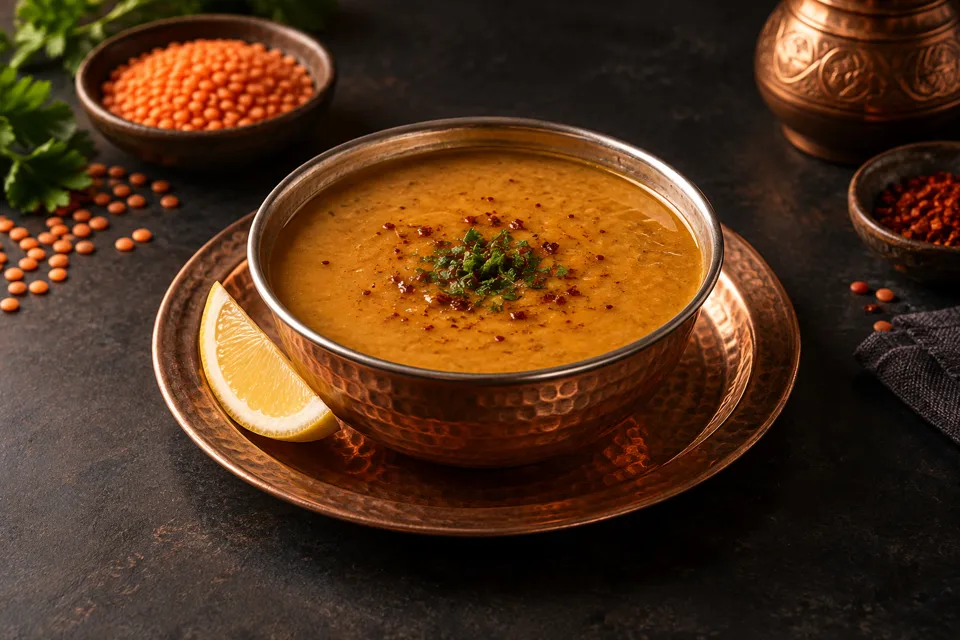
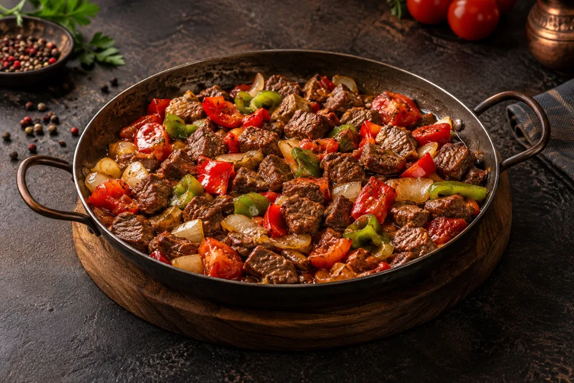
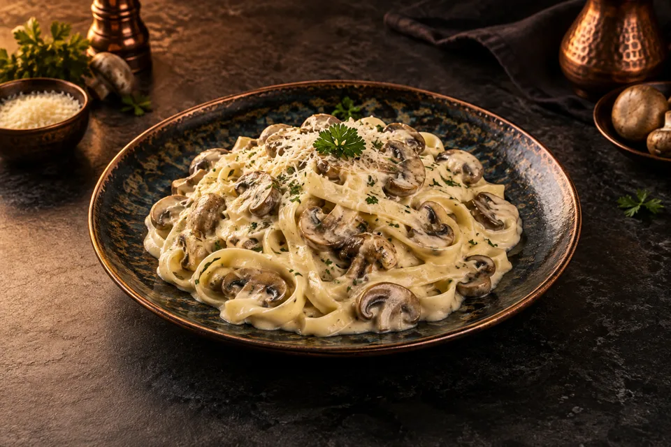
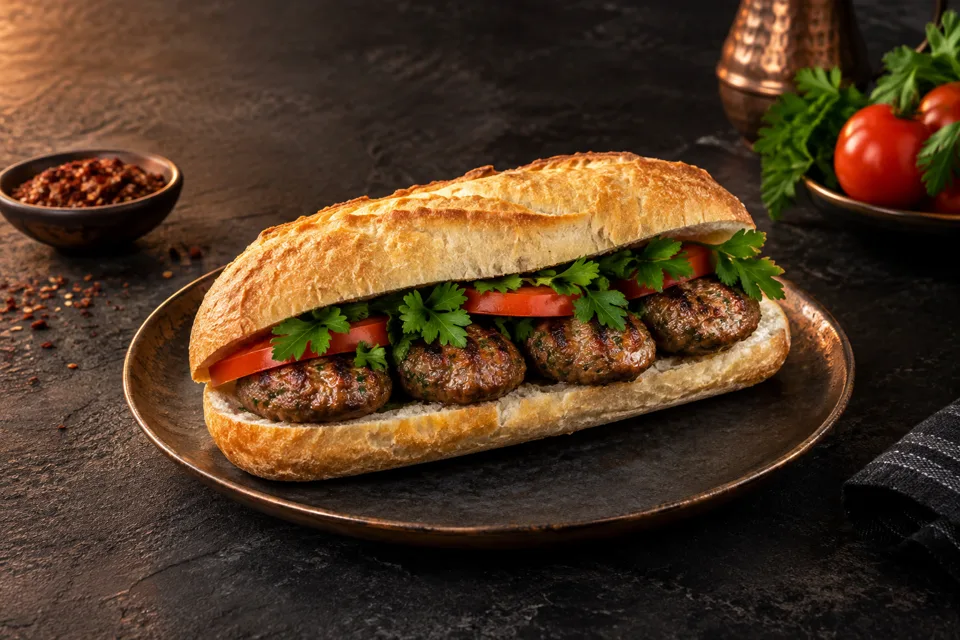

★★★★★Google
“Kars'ta yediğim en güzel kebaplardan biri. Etler çok lezzetli, servis de sıcacık.”
— Mehmet K.Ateşin başında başlayan lezzet,
aynı sofrada buluşan güzel anlar.
Bizim için güzel bir sofra; közün kokusu, sıcak bir karşılama ve sevdiklerinizle paylaştığınız vakittir.
Kağızman'da bir yemek molası, dostlarla uzun bir sohbet ya da ailece bir akşam… Sofra Ocakbaşı'nda buluşalım.
Soframıza gelin ↗Çorbalar, kebaplar, köfteler ve daha fazlası.
Levent Chef’in menüsünü keşfedin.

01 / ÇORBALARMercimek · Ezogelin · Kelle Paça
Çeşitleri keşfet 02 / KEBAPLAR
02 / KEBAPLARAdana Kebap · Urfa Kebap · Karışık Izgara
Çeşitleri keşfet 03 / DÜRÜMLER
03 / DÜRÜMLERAdana Dürüm · Tavuk Dürüm · Et Şiş Dürüm
Çeşitleri keşfet 04 / KÖFTELER
04 / KÖFTELERSofra Köfte · Beğendili Köfte · Kaşarlı Köfte
Çeşitleri keşfet
05 / TAVA YEMEKLERİKöri Soslu Tavuk · Et Sac Tava · Et Güveç
Çeşitleri keşfet
06 / MAKARNALARFettuccine Alfredo · Penne Funghi · Körili Penne
Çeşitleri keşfet
07 / EKMEK ARASIYarım Ekmek Köfte · Tam Ekmek Köfte
Çeşitleri keşfet“Kars'ta yediğim en güzel kebaplardan biri. Etler çok lezzetli, servis de sıcacık.”
— Mehmet K.“Çorbaları ve köftesi harika. Ailecek geldik, herkes çok memnun kaldı.”
— Ayşe T.“Levent Chef'in emeği belli oluyor. Temiz, samimi ve doyurucu bir ocakbaşı.”
— Burak Y.“Paket servis hızlı, porsiyonlar çok iyi. Kağızman'da gönül rahatlığıyla öneririm.”
— Elif D.Yorumlar Google işletme profilimizden derlenmiştir. Deneyiminizi paylaşmak için bizi Google'da değerlendirebilirsiniz.